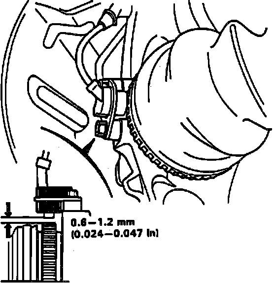
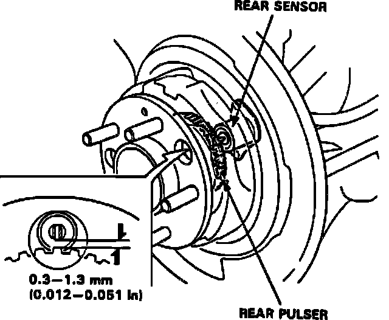
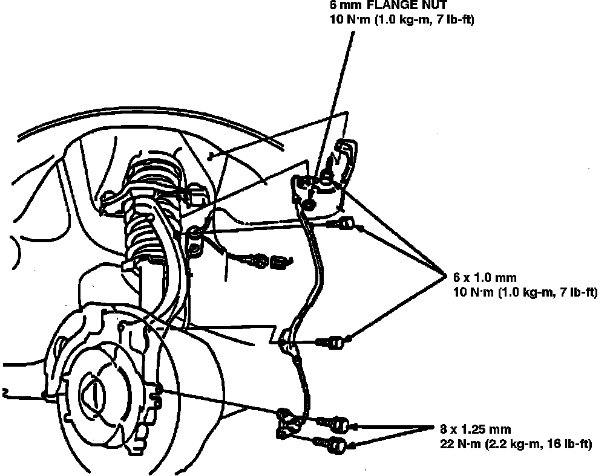
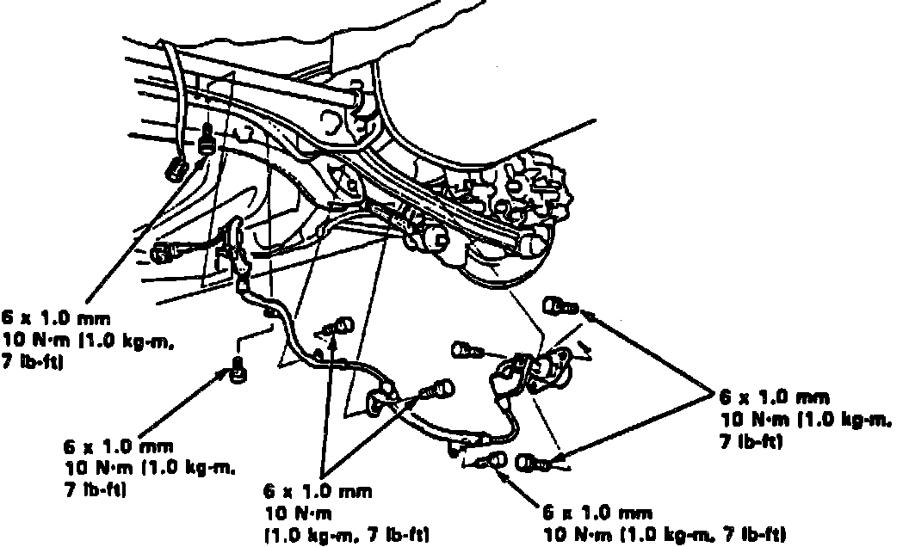

Wheel Speed Sensor: Service and Repair
Fig. 79 Front Wheel Sensor:

Fig. 82 Rear Wheel Sensor:

Fig. 86 Front Sensors/pulsars:

Fig. 87 Rear Sensors/pulsars:

1. Inspect sensor for chipped or damaged teeth.
2. Measure air gap between sensor and pulser, Figs. 79 and 82. While rotating driveshaft manually. If gap exceeds specifications, replace distorted knuckle.
3. On models equipped with Supplemental Restraint System (SRS), wire harness is yellow. Do not use electrical equipment on these circuits. Do not damage SRS wire harness when servicing sensors.
4. When installing sensors, do not twist wires, use white wire line as guide, Figs. 86 and 87.
5. Confirm sensor operation as outlined under Testing and Inspection / Procedures / Signal Confirmation.